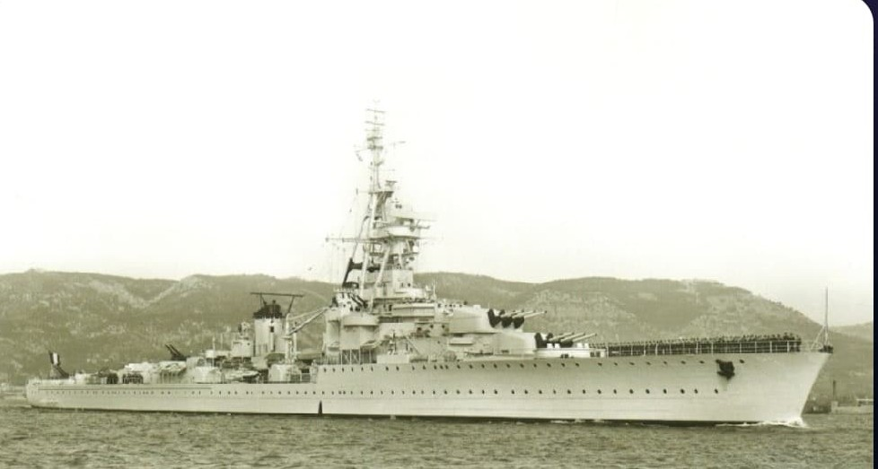
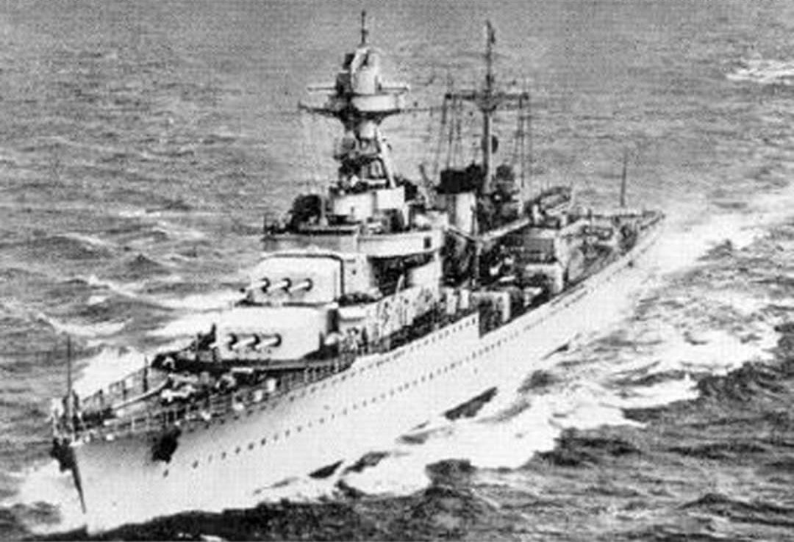

Le Georges Leygues est un croiseur léger français de la classe La Galissonnière, mis en service à la fin des années 1930. Équilibré, rapide et bien armé, il est considéré comme l’un des meilleurs croiseurs de la Marine nationale de l’entre-deux-guerres.
Il participe à la défense de Dakar en 1940, puis aux opérations alliées en Méditerranée et en Atlantique, notamment lors des campagnes d’Italie et de Provence.


La silhouette du Georges Leygues est typique des croiseurs français : coque élancée, superstructure compacte, trois tourelles triples de 152 mm bien réparties. Conçu pour l’escorte, le combat de surface et le soutien des opérations amphibies, il joue un rôle important dans les forces navales alliées.
Page du Musée HOP WW2 – Section navires français